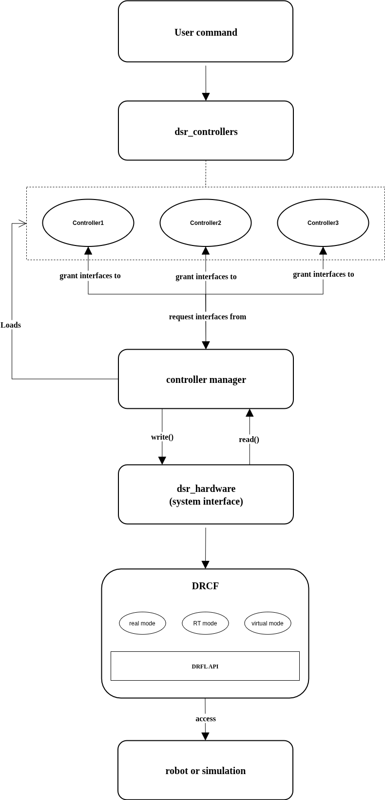

Architecture
This architecture illustrates the data flow between the user command, controller layers, and the DRCF (Doosan Robot Control Framework).
{kind=link}

The Doosan ROS 2 control stack follows the standard ros2_control architecture. It provides a modular interface between user-level applications (e.g., MoveIt 2), control logic, and physical Doosan robot hardware.
Controller Manager (CM)
The Controller Manager is responsible for managing and executing control loops. It loads and activates controllers such as the JointTrajectoryController used for arm motion. In the Doosan setup, the controller manager interacts with the dsr_hardware2 plugin, which represents the robot hardware.
The CM’s update() loop follows this cycle:
read() – Reads sensor data from the robot via dsr_hardware2.
controller update – Executes the control logic (e.g., trajectory tracking).
write() – Sends joint commands back to the robot through dsr_hardware2.
The CM also exposes ROS 2 services for controller lifecycle operations.
Controllers
In the Doosan ROS 2 control system, controllers are modular plugins that perform feedback-based motion control. Each controller compares the desired trajectory (reference) with the current joint state and computes the necessary control commands.
Controllers are implemented as classes derived from ControllerInterface and are loaded using the pluginlib library.
Common examples include:
JointTrajectoryController: Handles arm motion through trajectory interpolation.GripperCommandController: Sends simple open/close commands to a gripper.ForwardCommandController: Sends direct position or velocity commands.
The Doosan control package (dsr_bringup2) includes the following custom controllers:
dsr_controller2: Provides direct command-level access to DRFL API (movej, movel, etc.).dsr_joint_trajectory: Executes buffered joint trajectory using Doosan native motion engine.dsr_moveit_controller: StandardJointTrajectoryControllercompatible with MoveIt 2.dsr_position_controller: AForwardCommandControllerfor position control of each joint.
Controllers operate on a lifecycle model (LifecycleNode) and transition through states such as unconfigured, inactive, and active.
During the control loop, the update() method is called to:
Read the latest joint states (via
state_interface)Compute control commands
Write to the
command_interface(e.g., position, velocity)
User Interfaces
Users interact with the control system primarily via Controller Manager services. These services allow you to dynamically load, activate, deactivate, and switch controllers at runtime.
Example usage with CLI:
ros2 control list_controllers
ros2 control load_controller joint_trajectory_controller
ros2 control set_controller_state --activate joint_trajectory_controller
You can also interface with the controller manager using:
RViz2 GUI (via MoveIt 2)
Custom ROS 2 nodes
Python or C++ service clients
For a complete list of available services, refer to the controller_manager_msgs/srv/ package.
Hardware Components
In the Doosan system, the robot is abstracted as a single System hardware component using the dsr_hardware2 plugin.
This system interface provides:
State Interfaces: Current joint positions and velocities
Command Interfaces: Target joint positions and velocities
Key features:
Communicates with physical robot via the DRFL API
Supports both real and virtual robot modes
Implements the required read() and write() methods for hardware synchronization
Note
The Doosan robot integration follows a System-only model in ROS 2 control. There are no separate Sensor or Actuator components.